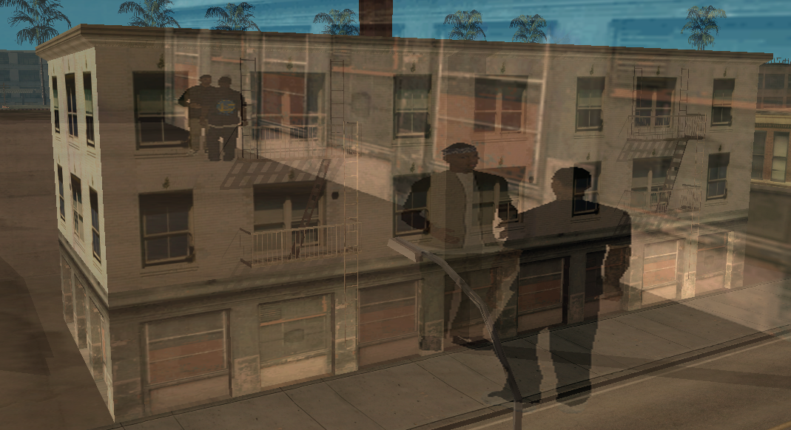

Idlewoodi Lakótömbök

Idlewood, Apartmants és bulinegyed
Idlewood-nak 42%-os bűnözési rátája van jelenleg.
A bulinegyed területén mindenhol szinte örömlányokról, kábítószerekről, és a pénzről szólnak az esték.
A klubbot egy Jaboris Graham nevű ember vezeti.
Ebben a blokkban nagyon sok pénz folyik be és ki.
Az apartman része az a kettő felső rész, ahol nagy mennyiségű kábítószer értékesítés folyik, napi szinten.
Két iroda és emelet szolgál a rendelkezésükre, az előállításra, mint mondjuk a crack vagy crack-kokain, vagy a sima kokaint felütik még egy összetevővel.
Néha kijön razziázni a rendőrség de elszöknek a tettesek, mert túl nagy a tömeg.
Azóta a rendvédelem nem nagyon próbálkozott újabb razziával. A kis vállalkozása a tulajnak 2018 óta működik.
Asian Boys Crip
Asian Boyz, más néven ABZ Crips de írhatnám úgy is, hogy ABZ-26.
Az Asian Boyz nevezetű banda azért jött létre 1970 körül, hogy az Amerikából menekülő Crips bandatagokat megvédje, egyre többen lettek és egyre nagyobb hatalom volt a kezükben.
A bandában leginkább fiatal tagok vannak, 15-19 év közöttiek. A bandát túl nyomórészt délkelet-ázsiai-amerikai, vietnámi, és kambodzsiak alkotják.
Miután egyre nagyobb hatalom lett a kezükben elkezdtek terjeszkedni, és komolyabban is foglalkozni illegállal.
Ide sorolható a drogkereskedelem, fegyver kereskedelem, gyilkosságok (legtöbbször ezt pénzért), és a többi.
Los Santos-ban az egész várost el lepték az ABZ feliratú graffitik, a fiatal tagok nem titkolják, hogy hova tartoznak.
Főbb riválisuk az összes Bloods szett, ezek mellett az összes Sureno, Norteno banda. (MS-13, 18th Street Gang, etc...) Teritoriumukban nem igazán tűrik a rendőrség jelenlétét sem a civilekét.
A közösségi médiában egyre gyakrabban látni, ahogyan az ABZ tagok fegyverekkel a kamerába vigyorogva, célozva, hovatartozásukat bátran mutogatva alázzák a sárga földig riválisukat.